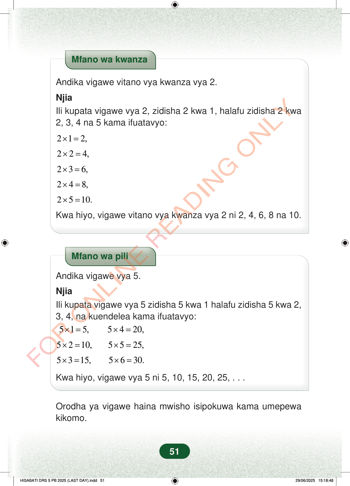

Mfano wa kwanzaAndika vigawe vitano vya kwanza vya 2.NjiaIli kupata vigawe vya 2, zidisha 2 kwa 1, halafu zidisha 2 kwa2, 3, 4 na 5 kama ifuatavyo:212,×=224,×=236,×=248,×=2510.×=Kwa hiyo, vigawe vitano vya kwanza vya 2 ni 2, 4, 6, 8 na 10.Mfano wa piliAndika vigawe vya 5.NjiaIli kupata vigawe vya 5 zidisha 5 kwa 1 halafu zidisha 5 kwa 2,3, 4, na kuendelea kama ifuatavyo:515, 5420,×=×=5210, 5525,×=×=5315, 5630.×=×=Kwa hiyo, vigawe vya 5 ni 5, 10, 15, 20, 25, . . .Orodha ya vigawe haina mwisho isipokuwa kama umepewakikomo.51
Mfano wa kwanza
Andika vigawe vitano vya kwanza vya 2.
Njia Ili kupata vigawe vya 2, zidisha 2 kwa 1, halafu zidisha 2 kwa 2, 3, 4 na 5 kama ifuatavyo:
2 1 2, × =
2 2 4, × =
2 3 6, × =
2 4 8, × =
2 5 10. × =
Kwa hiyo, vigawe vitano vya kwanza vya 2 ni 2, 4, 6, 8 na 10.
Mfano wa pili
Andika vigawe vya 5.
Njia Ili kupata vigawe vya 5 zidisha 5 kwa 1 halafu zidisha 5 kwa 2, 3, 4, na kuendelea kama ifuatavyo:
5 1 5, 5 4 20, × = × =
5 2 10, 5 5 25, × = × =
5 3 15, 5 6 30. × = × =
Kwa hiyo, vigawe vya 5 ni 5, 10, 15, 20, 25, . . .
Orodha ya vigawe haina mwisho isipokuwa kama umepewa kikomo.
51
Mfano wa kwanzaAndika vigawe vitano vya kwanza vya 2.NjiaIli kupata vigawe vya 2, zidisha 2 kwa 1, halafu zidisha 2 kwa 2, 3, 4 na 5 kama ifuatavyo:<math><mrow><mn>2</mn><mo>×</mo><mn>1</mn><mo>=</mo><mn>2</mn><mo separator="true">,</mo></mrow></math><math><mrow><mn>2</mn><mo>×</mo><mn>2</mn><mo>=</mo><mn>4</mn><mo separator="true">,</mo></mrow></math><math><mrow><mn>2</mn><mo>×</mo><mn>3</mn><mo>=</mo><mn>6</mn><mo separator="true">,</mo></mrow></math><math><mrow><mn>2</mn><mo>×</mo><mn>4</mn><mo>=</mo><mn>8</mn><mo separator="true">,</mo></mrow></math><math><mrow><mn>2</mn><mo>×</mo><mn>5</mn><mo>=</mo><mn>10.</mn></mrow></math>Kwa hiyo, vigawe vitano vya kwanza vya 2 ni 2, 4, 6, 8 na 10.Mfano wa piliAndika vigawe vya 5.NjiaIli kupata vigawe vya 5 zidisha 5 kwa 1 halafu zidisha 5 kwa 2, 3, 4, na kuendelea kama ifuatavyo:<math><mrow><mn>5</mn><mo>×</mo><mn>1</mn><mo>=</mo><mn>5</mn><mo separator="true">,</mo></mrow></math><math><mrow><mn>5</mn><mo>×</mo><mn>2</mn><mo>=</mo><mn>10</mn><mo separator="true">,</mo></mrow></math><math><mrow><mn>5</mn><mo>×</mo><mn>3</mn><mo>=</mo><mn>15</mn><mo separator="true">,</mo></mrow></math><math><mrow><mn>5</mn><mo>×</mo><mn>4</mn><mo>=</mo><mn>20</mn><mo separator="true">,</mo></mrow></math><math><mrow><mn>5</mn><mo>×</mo><mn>5</mn><mo>=</mo><mn>25</mn><mo separator="true">,</mo></mrow></math><math><mrow><mn>5</mn><mo>×</mo><mn>6</mn><mo>=</mo><mn>30.</mn></mrow></math>Kwa hiyo, vigawe vya 5 ni 5, 10, 15, 20, 25, . . .Orodha ya vigawe haina mwisho isipokuwa kama umepewa kikomo.